Nossa História
Surgimos em 2002 com a proposta de inserir os jovens do Bairro dos Pimentas nas Universidades de todo o Brasil.
O cursinho nasceu da necessidade de oferecer uma alternativa viável para jovens pobres que não podem pagar por um cursinho particular.
ESTRUTURA

Espaço: Cedido pelo CDHU/Prefeitura, fator crucial para existência do projeto.
Financiamento: Não possui financiamento público ou privado. É sustentado por uma rede de solidariedade.

Voluntários: Ex-alunos retornam para ensinar, criando um ciclo virtuoso.
METODOLOGIA

Formação Cidadã: Aulas vão além do vestibular, com debates sobre política e sociedade.

Autonomia: Formação para que o aluno se torne gestor do próprio conhecimento.

Acolhimento: Espaço seguro que respeita todas as crenças e identidades.